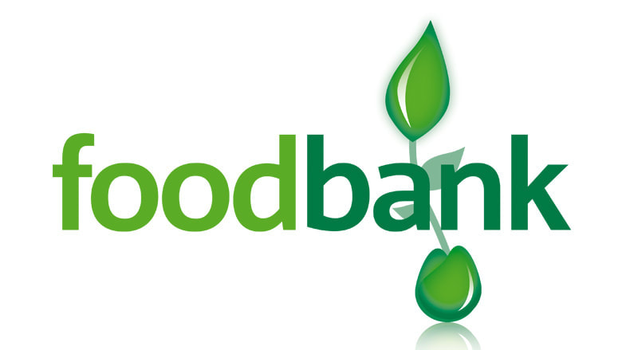
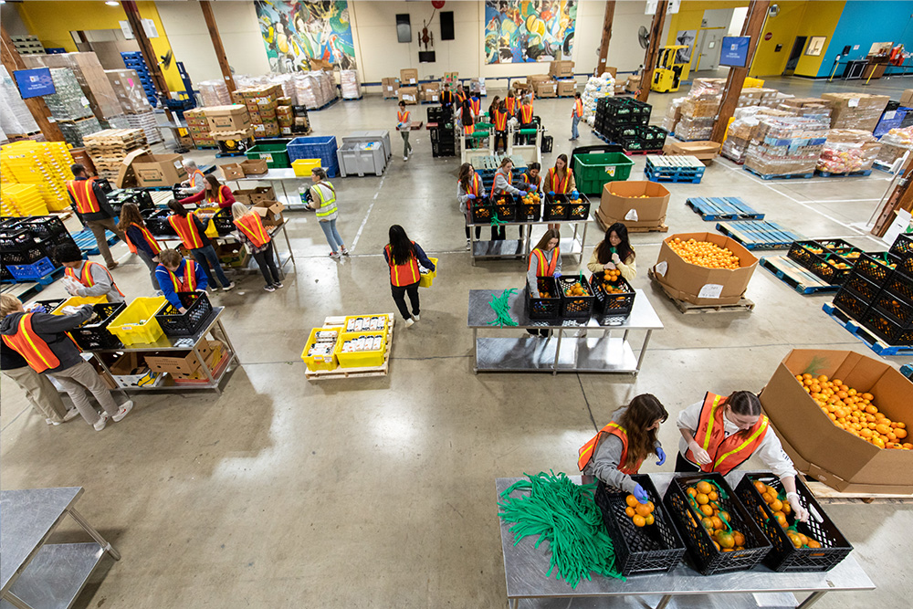
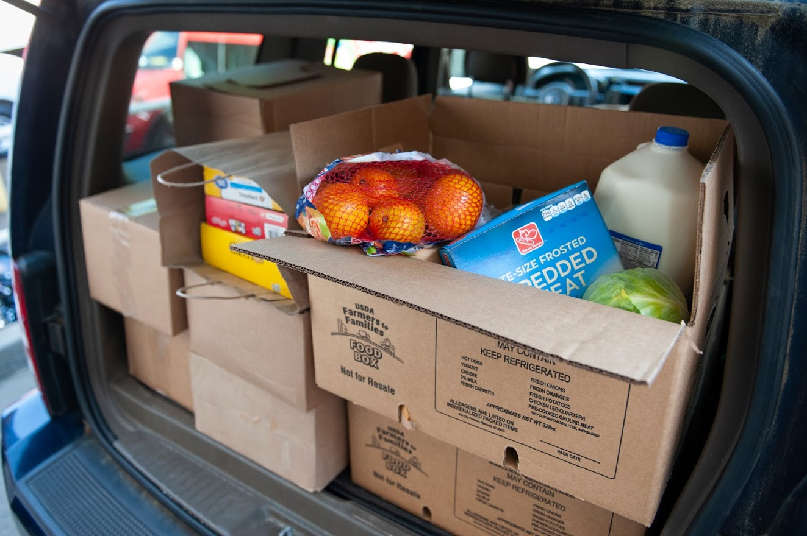
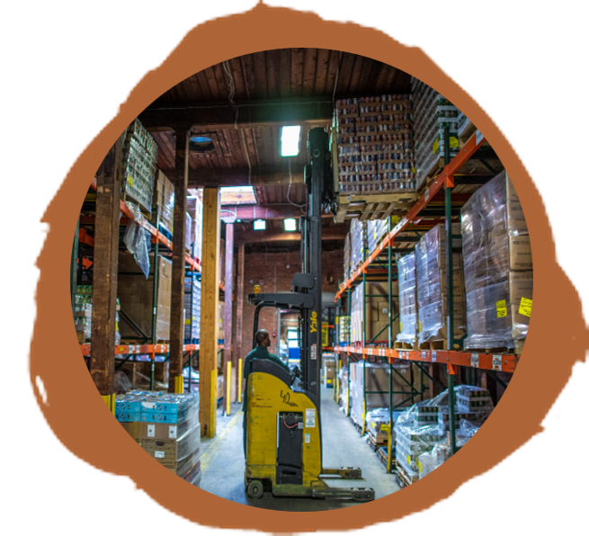
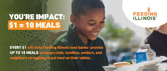
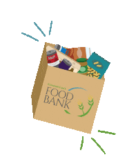
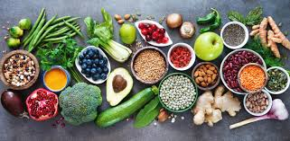

Food banks are non-profit organizations that act as large-scale warehouses and distribution centers for food. They collect and store food, then distribute it to local food pantries, soup kitchens, and other meal programs, which in turn provide the food to people in need


WHAT IS A FOOD BANK?
Services offered at a food bank are broadly similar to services offered at a food pantry, food closet, soup kitchen, meal center, and other food assistance organizations. However, a food bank is a different type of organization. A food bank is a larger repository of food, hygiene products, and other non-food items compared to smaller operations such as a food closet or food pantry. A food bank typically stores hundreds of thousands of pounds of food and non-food items. This means a food bank carries more items for those in need. Most food banks have delivery services or a car line for you to pick up boxed, canned, and prepackaged items. This is unlike a soup kitchen or meal center that serve prepared, ready-to-eat food for you to eat on premises. Most food banks do not include an area for people to eat within the facility itself. You pick up the items you need and then take them to your home.
FOOD PANTRIES AND FOOD CLOSETS
A food pantry or food closet are smaller distribution centers providing assistance. Sometimes food pantries and food closets are supplied with food from a larger food bank. Every community is different, meaning there may be different types of food pantries or food closets. For example, sometimes a food pantry or food closet is inside a school to make it easier for children and their families to get food. A food pantry and food closet typically carry less food and non-food items because they are smaller operations compared to a food bank.
SOUP KITCHENS AND MEAL CENTERS
A soup kitchen or meal center are places where prepared hot food and/or cold food is offered to those in need. Food is usually consumed on premises. Soup kitchens and meal centers are often staffed by volunteer organizations such as church or community groups. Soup kitchens and meal centers sometimes obtain food from a food bank, but may not provide food or non-food items (such as hygiene-related items) to be taken for use in the home.
TAP ON ME

Programs and Services:
OrderAhead:
A platform by the Feeding America Network where individuals can order free groceries online and choose a pick-up location and time.
Project DASH (DoorDash):
DoorDash partners with food banks, community agencies, and other social impact organizations to facilitate deliveries of food and essential items.
Full Cart:
A virtual food bank program that uses online donations to cover the cost of groceries and ships them directly to people's homes.
Homebound Delivery Programs:
Some food banks, like FIND Food Bank, offer delivery programs where volunteers deliver food to individuals who are homebound or unable to access distribution sites, according to FIND Food Bank's website.
My Pantry Express:
An online food pantry program operated by the Northern Illinois Food Bank and partners, allowing families to order groceries online for pick-up or delivery, according to My Pantry Express.
Meals on Wheels:
Some Meals on Wheels programs also offer food delivery services to seniors and others who meet specific criteria, according to Feeding America.
Food Bank News:
Reports on food bank initiatives that utilize DoorDash delivery services, like their "Doorstep Pantry" program, for free delivery of groceries, according to Food Bank
TAP ON ME

Program Operation
man using a forklift in a food warehouse on a brown paintbrush circle background
Public or private nonprofit organizations that provide nutrition assistance to people with low-income, by providing prepared meals or food for use at home, may be eligible to distribute USDA Foods through TEFAP. These organizations are known as eligible recipient agencies (ERAs), and TEFAP state agencies are in charge of selecting the ERAs that they will work with in their state or territory. All ERAs must meet minimum requirements outlined in program regulations; for example, those that provide prepared meals must demonstrate that they predominately serve people with low-income.
The types of foods USDA purchases for TEFAP vary depending on the preferences of state agencies and on agricultural market conditions. More than 130 nutritious, high-quality products are available. Products include canned, frozen, dried, juiced, and fresh fruits and vegetables; protein items such as meat, fish, eggs, nuts, and beans; whole and enriched grains such as rice, flour, cereals, pasta, and tortillas; and dairy products like milk, yogurt, and cheese. For a complete list of foods available through TEFAP, refer to the USDA Foods Available List for TEFAP.


your donation will help
Thank you

Thank you for your donations.